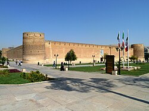

ارگ کریمخان یا ارگ کریم خانی ارگی است که در مرکز شیراز قرار دارد. این ارگ در زمان سلطنت سلسله زندیه ساخته شدهاست و پس از اینکه کریمخان زند، شیراز را به عنوان پایتخت و این مکان را بهعنوان مکان زندگی خود انتخاب کرد، به ارگ کریمخانی معروف شد.[۱] در زمان سلطنت سلسله قاجار، از ارگ بهعنوان دارالحکومهٔ امرای فارس و از ۱۳۱۰ خورشیدی، از آن بهعنوان زندان شهربانی استفاده میشد.[۲] در سال ۱۳۵۰، این ارگ به اداره فرهنگ و هنر وقت فارس واگذار شد.
این ارگ اکنون، زیر نظر وزارت میراث فرهنگی جمهوری اسلامی ایران اداره میشود و مرمت نیز شدهاست. از این ارگ بهعنوان موزه نیز مورد استفاده قرار گرفتهاست
این اثر در ۱۴ خرداد ۱۳۵۱ با شمارهٔ ثبت ۹۱۸ بهعنوان یکی از آثار ملی ایران به ثبت رسیدهاست.[۳]
ساخت ارگ بین سالهای ۱۷۶۶ و ۱۷۶۷ میلادی انجام شد و کریم خان زند بهترین معماران زمان خود را جهت ساخت آن بکار گرفت. او همچنین بهترین مصالح را از داخل و خارج کشور تهیه و ساخت بنا را بهسرعت تمام کرد. این بنا در دوره زندیه بهعنوان محل استقرار حکومت و در دوره قاجاریه بهعنوان محل زندگی فرمانداران محلی استفاده میشد. عبدالحسین میرزا فرمانفرما حکمران فارس، دستور به بازسازی مینیاتورهای نقاشی شده در این بنا داد.[۴]
